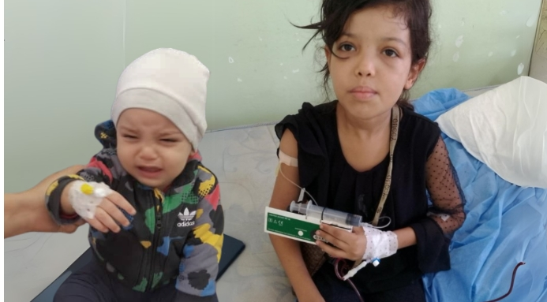
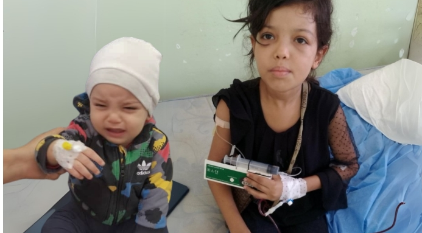
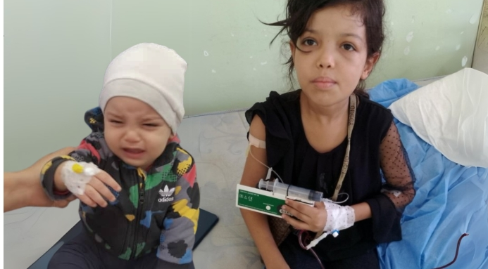

Je n'ai pas vraiment l'habitude de m'exposer, mais je le fais aujourd'hui car j'ai besoin d'aide.
Il y a quelques mois j'ai attrapé une forme de paludisme sévère qui a engagé mon pronostic vital. Après une période de coma, j'ai été amputée des deux pieds et des deux mains en avril et mai derniers.
Du jour au lendemain la vie a bascul√©. Je me suis retrouv√©e projet√©e dans le monde des handicap√©s, des invalides (atroce ce mot ! üòÇ).
Je découvre un monde où le confort est souvent financièrement inabordable pour beaucoup d'entre nous. Les aides financières aujourd'hui sont insuffisantes pour pouvoir assurer aux amputés le minimum pour vivre presque normalement.
Une prothèse coûte entre 30 000 € et 100 000 € pièce, et seules quelques-unes sont remboursées. Je dois changer de voiture, acheter une voiture plus grande pour le fauteuil et une automatique car je n'ai plus le droit de conduire ma voiture manuelle.
Cette exp√©rience n'est pas simple. Mais elle donne encore plus l'envie de vivre ! La p√©riode de r√©√©ducation est longue mais elle permet l'espoir. Celui de revivre, diff√©remment, mais revivre quand m√™me. J'ai tellement de choses √† faire, reprendre la danse, le footing, et aussi des nouvelles choses ! üôèü誂ù§üôÇ
C'est pour cette raison que je fais cette vidéo aujourd'hui, je recherche un soutien financier pour assumer les dépenses liées au handicap.
Je remercie toutes les personnes qui me soutiennent, tous les gens qui visionneront cette vidéo et auront envie de m'aider. Je remercie ceux qui ne pourront pas m'aider mais qui auront une pensée d'encouragement.
Merci √† vous tous üôèüèªüôèüèªüôèüèª
Montage et diffusion des vidéos par @lucasgrdn. Un immense merci pour ta générosité et ta qualité de travail...
üì© Pour me contacter :
Instagram : @lucie.retail
Facebook : @Lucy Luke
Un simple don peut changer ma vie. Merci infiniment ❤️
FAIRE UN DON URGENTObjectif : 100 000 € pour la greffe vitale.

Un simple don peut leur offrir une chance de guérir. Merci pour votre soutien ❤️
FAIRE UN DON URGENT